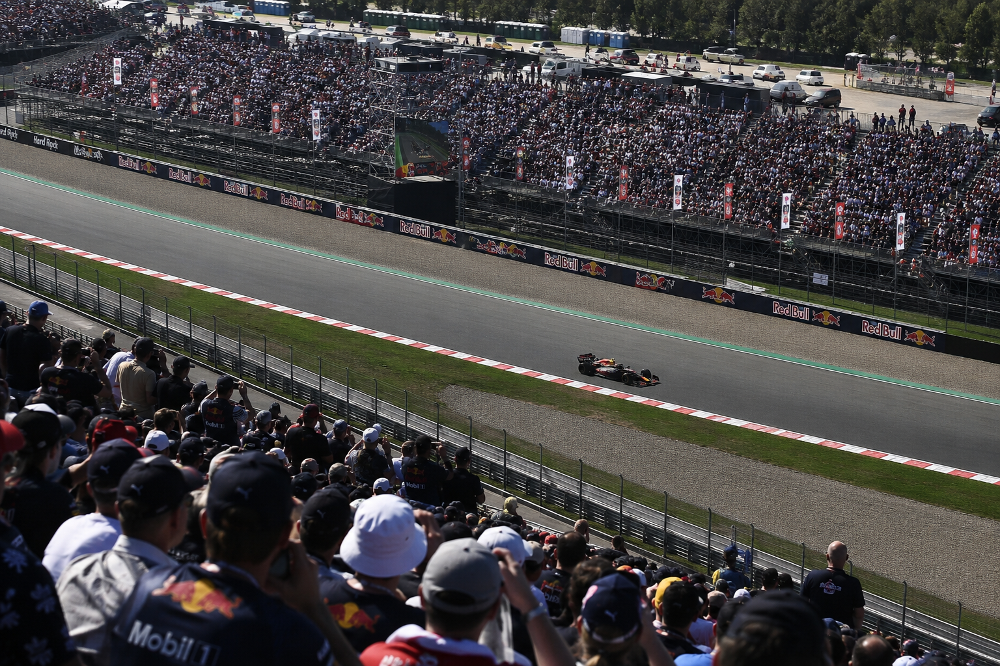

SPORT · FORMULA 1 · LFJ-002
The Second Half Starts in the Engine Room

Formula 1's 2026 technical revolution has already changed the competitive landscape. Now an FIA development mechanism is giving several power-unit manufacturers additional opportunities to respond. The interesting question is what happens when engineering development becomes part of the championship battle itself.
Formula 1 has always been a sport in which the stopwatch tells only part of the story.
Behind every lap is an enormous engineering system: aerodynamics, tyres, energy deployment, software, power management, cooling, reliability and strategy. Change one part and the consequences can travel through the rest of the car.
The arrival of the 2026 regulations made that relationship even more interesting.
The new technical era introduced a substantially revised power-unit formula, including a much greater electrical contribution and the removal of the MGU-H. The result is not simply a different engine. It is a different engineering problem.
Now, as the championship enters its second half, another variable has entered the picture.
The FIA's Additional Development and Upgrade Opportunities, or ADUO, mechanism is designed to provide additional development opportunities to power-unit manufacturers that fall sufficiently behind the benchmark under the FIA's defined assessment process.
The FIA announced the results of its second review period on 26 August 2026.
That decision could make the latter part of the season particularly interesting.
A rule designed for a new kind of competition
The ADUO framework is one of the less visible elements of the 2026 regulations.
Fans see the cars.
Teams see the data.
Engineers see thousands of individual variables.
The governing framework has to sit above all of it and determine how development is allowed to happen without turning the technical regulations into a permanent advantage for whoever happened to get the opening interpretation right.
That is where the ADUO mechanism becomes significant.
Rather than allowing a performance gap to become completely static, the framework can provide additional opportunities for manufacturers that meet the FIA's criteria.
It is an unusual form of competitive balancing because the intervention does not happen by slowing down the leader.
It happens by giving the pursuers more room to develop.
The fascinating part of the 2026 story may not be who has the fastest engine today, but who can turn an additional opportunity into performance tomorrow.
The benchmark nobody expected to be the whole story
The FIA's August assessment produced an intriguing distinction.
Red Bull Ford Powertrains was identified as the benchmark for internal-combustion-engine performance under the FIA's assessment.
Yet the championship picture tells a different story.
That difference matters.
A power unit is not judged by one number alone in the real world of Formula 1. The performance of the complete car depends on how the power unit interacts with aerodynamics, electrical deployment, energy management, cooling, packaging, reliability and the driver's ability to extract performance from the package.
In other words, the strongest component in one area does not automatically create the strongest overall car.
That is one of the reasons this season is so interesting from an engineering perspective.
THE FIA'S AUGUST REVIEW
The FIA's 26 August announcement stated that its second ADUO review had assessed the internal-combustion performance of the 2026 power units.
Under the published assessment, Mercedes was classified within the 2–4% performance-deficit range and received an additional homologation opportunity for 2026 and another for 2027.
Ferrari, Audi and Honda were classified in the greater-than-4% category and received two additional homologation opportunities for each of those years.
The FIA identified Red Bull Ford Powertrains as the benchmark for the ICE comparison.
Why Mercedes is suddenly part of the story
There is a useful contradiction here.
Mercedes has demonstrated strong overall performance during the opening phase of the new regulations. Yet its internal-combustion performance, measured through the FIA's specific ADUO methodology, leaves room for development.
That is exactly the sort of situation in which a technical regulation becomes more than a rulebook.
It becomes an incentive structure.
Mercedes does not simply have to ask how quickly its engineers can improve the power unit.
It has to decide where additional development effort is worth spending, how that development interacts with the rest of the car, and how quickly a technical improvement can become something measurable on the circuit.
That is where the second half of 2026 becomes particularly interesting.
The opportunity is not the same as the result
There is a temptation to look at additional development allowances and immediately assume that the competitive order will change.
Formula 1 rarely works that neatly.
An additional homologation opportunity is exactly that: an opportunity.
It still requires engineering insight.
It requires testing and validation.
It requires manufacturing capacity.
It requires reliability.
And ultimately, it has to survive the unforgiving test of a qualifying lap and a race distance.
A development that looks impressive inside a simulation does not automatically become a tenth of a second on Sunday afternoon.
That is what makes the ADUO mechanism so interesting.
The FIA can change the conditions under which development happens.
It cannot manufacture the engineering solution.
The second half becomes an experiment
From the outside, Formula 1 can look like a straightforward contest between drivers and teams.
The deeper reality is closer to an enormous live engineering experiment.
The 2026 regulations created a new technical environment.
The opening races provided data.
The first development cycles revealed strengths and weaknesses.
The FIA's review process has now altered the amount of development freedom available to several manufacturers.
The teams return to the track with new information and, in some cases, additional opportunities to act on it.
That creates a fascinating feedback loop.
Performance produces data.
Data produces development decisions.
Development produces another performance measurement.
The cycle continues.
What should fans watch now?
The obvious answer is the championship standings.
But the more interesting answer may be found in the gaps.
Watch the power-unit manufacturers.
Watch how quickly upgrades appear.
Watch reliability.
Watch how teams manage electrical energy over a lap.
Watch whether improvements in one part of the power unit create compromises elsewhere.
And watch the difference between a technical improvement and a competitive improvement.
Those are not necessarily the same thing.
Formula 1's second half may become a test of adaptation as much as speed.
The bigger idea
There is something almost philosophical about what Formula 1 has created here.
A regulation establishes a boundary.
Engineers work inside that boundary.
Competition exposes weaknesses.
New information arrives.
The rules provide mechanisms for adaptation.
The teams respond.
Then the circuit becomes the judge.
That is why technical regulation is so important to the sport. It does not merely determine what the cars are allowed to be.
It determines the environment in which innovation happens.
And the 2026 season may prove to be one of the clearest examples of that principle.
The FIA's ADUO mechanism is not a guarantee that the competitive order will change.
It is something more subtle.
It changes the conditions under which change itself can happen.
The Journal's view
The second half of a Formula 1 season usually arrives with a familiar question:
Who will win?
In 2026, there is another question worth asking.
Who will adapt fastest?
The FIA has created additional pathways for several power-unit manufacturers to develop their technology. What those manufacturers do with that opportunity will depend on engineering decisions that cannot be predicted from the rulebook alone.
That is what makes the next phase worth watching.
The championship is not simply a contest between finished machines.
It is a contest between organisations capable of learning, developing and responding while the competition is already underway.
For a sport built around the pursuit of fractions of a second, that may be the most important race of all.
EDITORIAL RESEARCH & CONTEXT
This article is original editorial analysis by the London Forum Journal. Factual information concerning the FIA's Additional Development and Upgrade Opportunities mechanism and the August 2026 review is based on publicly available FIA regulatory announcements and reporting. The Journal does not represent the FIA, Formula 1, any team, driver or power-unit manufacturer and is not affiliated with those organisations.
Primary regulatory reference: FIA — announcement concerning the ADUO results following the first and second 2026 review periods.
Readers should consult the FIA's official regulatory publications for the complete technical and sporting regulations.
This article is original editorial analysis by the London Forum Journal. Factual information concerning the FIA's Additional Development and Upgrade Opportunities mechanism and the August 2026 review is based on publicly available FIA regulatory announcements and reporting. The Journal does not represent the FIA, Formula 1, any team, driver or power-unit manufacturer and is not affiliated with those organisations.
Primary regulatory reference: FIA — announcement concerning the ADUO results following the first and second 2026 review periods.
Readers should consult the FIA's official regulatory publications for the complete technical and sporting regulations.